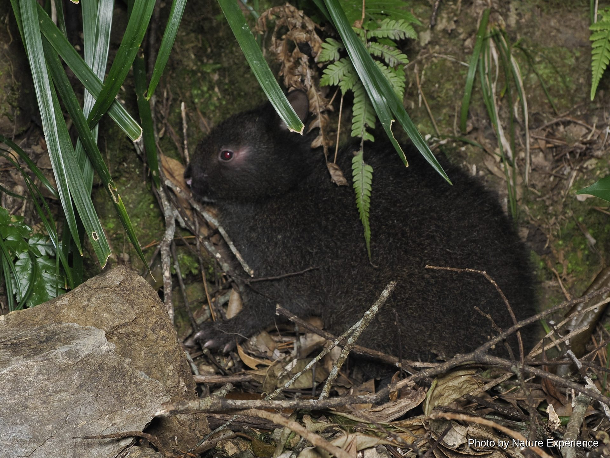
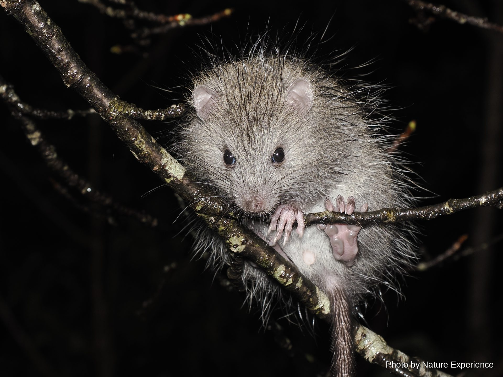

Amami Rabbit
Grows to about 41-51 cm and weighs 1.3-2.7 kg. A species endemic to Japan, found only .

CREATURES / HONYUURUI
Amami Oshima's forests are home to precious mammals found nowhere else, including the Amami Rabbit. Many are designated Natural Monuments or Nationally Rare Wild Species.
ABOUT
Amami Oshima, often called the "Galápagos of the East," has been separated from the continent for a very long time, and as a result many mammals found nowhere else in the world have survived here.
Walking the night forest, you may encounter nocturnal mammals such as the Amami Rabbit hopping along forest roads, or the Ryukyu Long-haired Rat moving swiftly through the trees. Many species are not very wary, and can sometimes be observed at leisure even in flashlight beams.
If you find one, please keep your distance, avoid excessive flash photography, and quietly enjoy the sight.
Many of the mammals introduced here are designated Natural Monuments or Nationally Rare Wild Species, and their capture, collection, or transfer is prohibited by law. If you find one, please don't chase or touch it — just observe quietly.
MAMMALS OF AMAMI
A look at the mammals you can meet in Amami Oshima's forests. Click a photo or name to see that species' full page.
Grows to about 41-51 cm and weighs 1.3-2.7 kg. A species endemic to Japan, found only .

Body length 22-33 cm, tail length 25-35 cm. Japan's largest rat, found only on Amami O.

Endemic to Amami Oshima, designated a national Natural Monument in 1972. Body length 8.
One of the world's smallest mammals, about 5.5 cm long and weighing just 5-8 g. A spec.

EXPLORE MORE
Pick a category to see more of Amami Oshima's wildlife.
NIGHT FIELD TOUR
Join a guide and search for wildlife together in the night forest.
See night tour details and pricing →